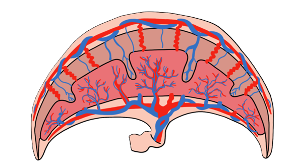
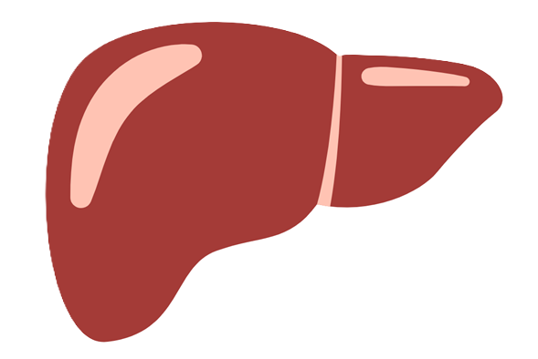
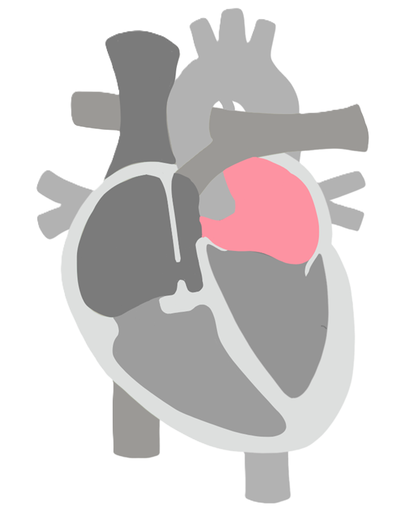
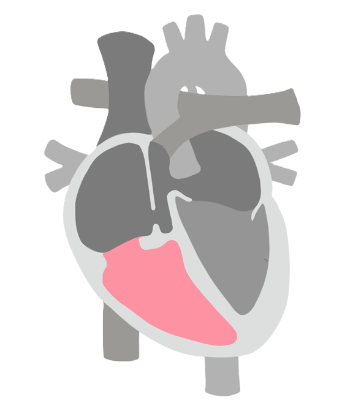
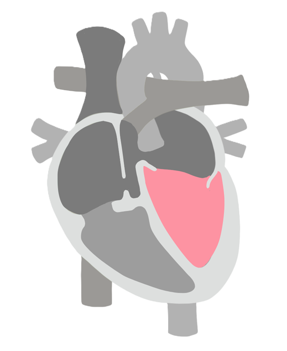
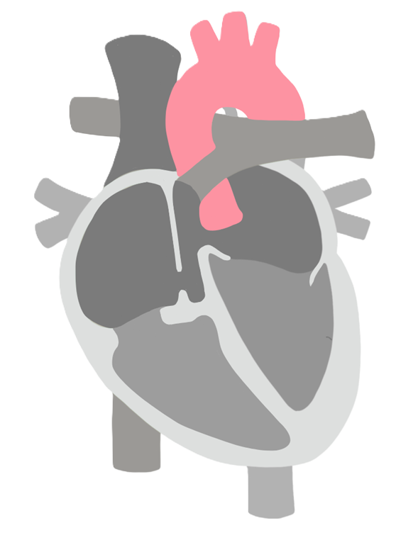
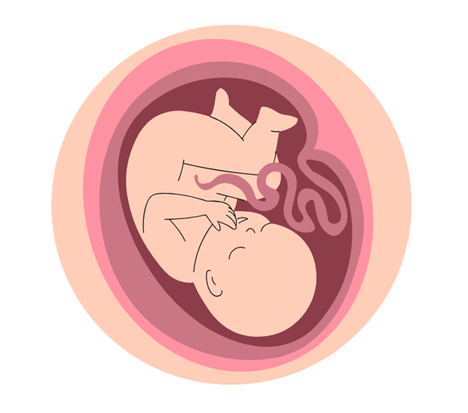

1. Placenta.
Entrada de sangre oxigenada desde la placenta.

2. Hígado.
Paso parcial por el hígado.

3. Vena cava inferior.
Mezcla de sangre en la vena cava inferior

4. Aurícula derecha.
Llegada a la aurícula derecha

5. Aurícula izquierda.
Primer camino saliendo de la aurícula derecha.

6. Ventrículo derecho.
Segundo camino saliendo de la aurícula derecha.

7. Arteria pulmonar.
La sangre pasa del ventrículo derecho a la arteria pulmonar.

8. Conducto arterioso.
La sangre se desvía hacia la aorta descendente.

9. Ventrículo izquierdo.
Llega sangre proveniente de la auricula izquierda y los pulmones.

10. Aorta ascendente.
La sangre sale por la aorta ascendente.

11. Aorta descendente.
Transporta sangre hacia las arterias umbilicales.

12. Retorno a la placenta.
La sangre llega a la placenta por las arterias umbilicales.